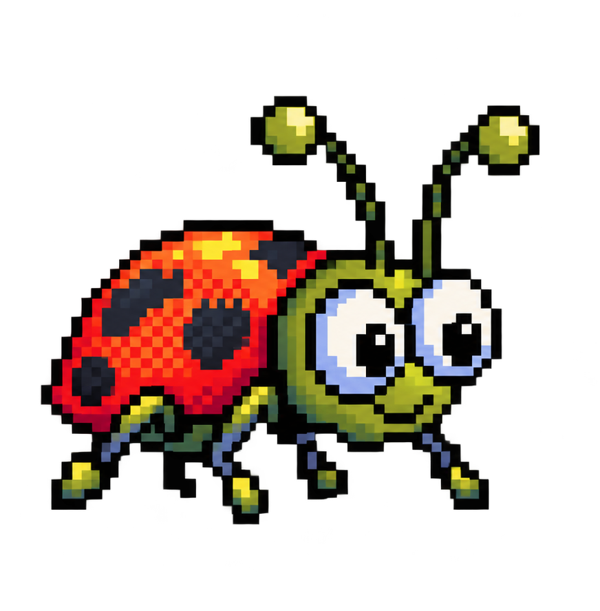
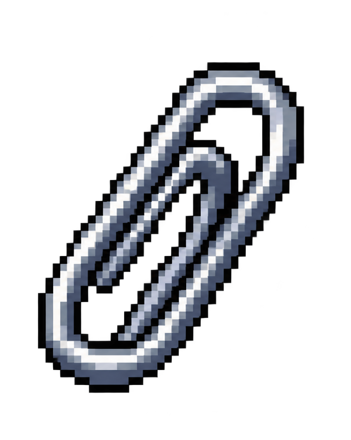

winemu 98
Un emulador de Windows 98 para volver a explorar el escritorio y las aplicaciones clásicas del sistema RETRO más conocido..
- Emulador
- Windows 98
PORTFOLIO · EDICIÓN 1998
Una selección de proyectos para mostrar el uso de flex.
Explorar proyectosVer:
ARCHIVO DE TRABAJOS
Seis ideas que encontraron su forma.
Un emulador de Windows 98 para volver a explorar el escritorio y las aplicaciones clásicas del sistema RETRO más conocido..
Una librería basada en React, presentada como proyecto práctico para el ejercicio 1.3.
Actividad práctica para organizar consignas, registrar avances y poner en uso los conceptos del curso.
Estado completado: primer ejercicio del curso, dedicado a construir una página con HTML semántico.
Un editor inteligente de Markdown integrado en Visual Studio Code.
Una empresa dedicada a crear software y desarrollar soluciones para distintos proyectos.
Carrusel continuo de imágenes pixel art.


Diseñamos experiencias digitales y sistemas visuales para proyectos con algo propio para contar.